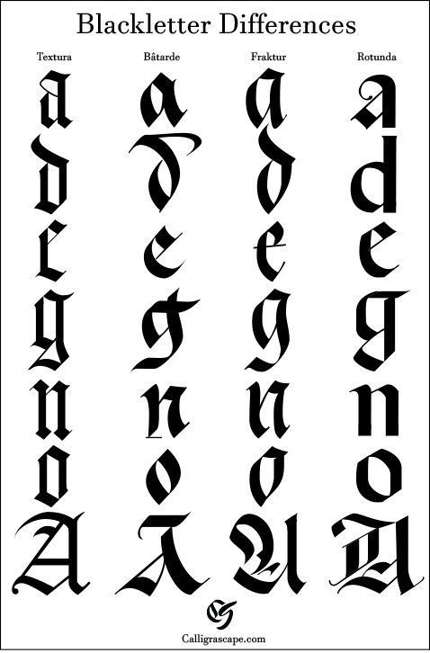

Introduction
You might be familiar with Blackletter Calligraphy style, or you might have seen them in the movies which it is used as the font for newspaper titles; but did you know that it is also a type of calligraphy?
Blackletter Calligraphy is a type of Gothic script, where it has both very thick and very thin lines.
It is widely used on printed books back then, and nowadays you can see people getting tattoos in this script.
Unlike regular calligraphy styles which are smooth, cursive and elegant, Blackletter Calligraphy is edgy and bold. There are 4 styles of Blackletter which is shown below.
|  |
Tools
As Blackletter is different than other styles, the tools needed for it are also slightly different.
Here are some of the options you can choose between.*You don't need to buy all of them, pick one that suits you most and you're good to go!
1. Parallel Pens
Unlike other pens, Parallel pen has a flat end where it will be the width of your stroke. The most recommended parallel pen is the Pilot Parallel Pen, which is available in 6 sizes.
2. Pen Nibs
There are still flat-pen nibs that work with a normal pen holder. Make sure that the nib is flat, not pointed(which is used for Copperplate Calligraphy)
*Note that flat pen nibs work better with straight nib holders, oblique nib holders are not encouraged
3. Pencils!!
If you're still not sure if Blackletter is 'your thing', and don't want to spend any money buying those pens, try using pencils!! There will be a tutorial video on teaching you how to write Blackletter Calligraphy using pencils.
Tutorials
After getting those pens, let's get started!
As Blackletter Calligraphy may be slightly tougher, make sure you start on the right path!
Check out this template here for practicing purpose!
1. This is the video explains on how to do Blackletter Calligraphy with pencils.
2. This video talks about the basic strokes and some of the lowercase alphabets in Blackletter Calligraphy.
3. This video demonstrated on lowercase alphabets based on the alphabet types.
4. This video shows how to write uppercase alphabets in Blackletter Calligraphy
Hope you enjoyed this page of Blackletter Calligraphy! Although it is not as popular compared to other calligraphy styles, Blackletter is still a unique yet aesthetic style.